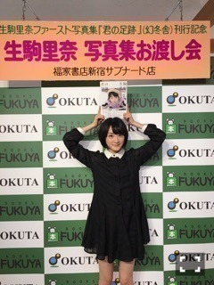
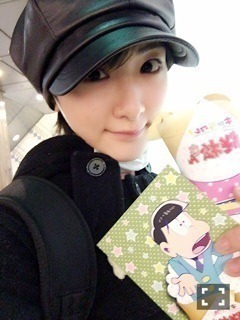

| 2016/02 25 Thu | 見落としてはいないかなぁ、あの時よりはちゃんと見れてる。 |
2月22日
乃木坂46は4歳のお誕生日を迎えましたヽ(・∀・)ノヽ(・∀・)ノ
今年はメンバー、スタッフさん、ファンの皆さんと乃木坂46時間TVで過ごしましたね〜ヽ(・∀・)ノ
見てくださった皆さん本当にありがとうございました(＾ω＾)
メンバーが全国に散らばって各地のファンの皆さんとお話して、
各メンバーのレギュラー番組や雑誌のコラボ企画したり、
かずみん、いくちゃん、真夏、若月、まっちゅんの進行で進めて行ったりと
四年前の
乃木坂が出来た頃は絶対出来ない事をした46時間だったと思いました。
純粋に楽しい時間でしたし、
乃木坂ってこんな事今しているんだって改めて知れたし、
みんなが頑張ったからこそ
バースデーライブじゃなくて最初は不安だったし、ファンの方も残念に思ったかも知れませんが、
新たに絆が深まったと思いました！
乃木坂の為に、自分がプラスになる様にこれからも頑張ります！！
皆さんもこれからの乃木坂楽しみにしていて下さいね

そして、もうニュースで知っている方もいらっしゃると思いますがっ！！
私、生駒ちゃんが
今年2016年に日本上陸20周年を迎えるNY発のデザイナーズブランド、ANNA SUIの春夏アジア圏ビジュアルモデルに起用されました！
もうこんな凄いチャンス二度とないでしょう！！
まさかの出来事に最初はあまり実感が湧かず。
NYに行って緊張と時差ボケのダブルパンチでフラフラになりながら撮影しました！！
レスリー・キーさんに凄く綺麗に撮って頂きました！
多分、今まで見たことない私が居ます！
ANNA SUIさんの魅力、
ちゃんと私出せているかなぁ。。
皆さん是非見てくださいね！！
そして遂に出ました！
２月24日発売になりました
生駒ちゃんの写真集
君の足跡

お渡し会
沢山の方に来て頂きました

いつも来てくださる方
初めましてさん！
女の子のファンちゃんが沢山いて嬉しかったなぁ
学生さん、中高生のコ達が来てくれて、
お姉さんは凄く感動しました。
お小遣いから出してくれたんだねありがとうございます(´；ω；｀)⭐️⭐️
写真集、
出せる予定はありませんでした。
生駒ちゃんを応援して下さる皆さんがいたから
青山さんがいたから作ることが出来ました！
一生忘れません。
本当にありがとうございました！！
このチャンスをくれて本当にありがとうございました！
乃木坂に入って、
沢山の素晴らしい出来事に出会っています。
これからも出会えますように。
努力していきます！！！
グレーの十四松パーカーは着やすいですね(＾ω＾)
そろそろウィッグ買わねば。
トッティーと写真撮らせて頂きました。

クレープ頼んだらチョロ松が出てきたよ。
ヲタ活したいね〜
ねぇみんな〜
モッツァレラチーズゲームしようぜ〜ヽ(・∀・)ノ
明日はMステですねっヽ(・∀・)ノ
新曲ですぜっヽ(・∀・)ノ
ぜひ見てくださいね〜⭐️⭐️
へばなっ☆彡
コメント(655)
2016/02/25 18:24